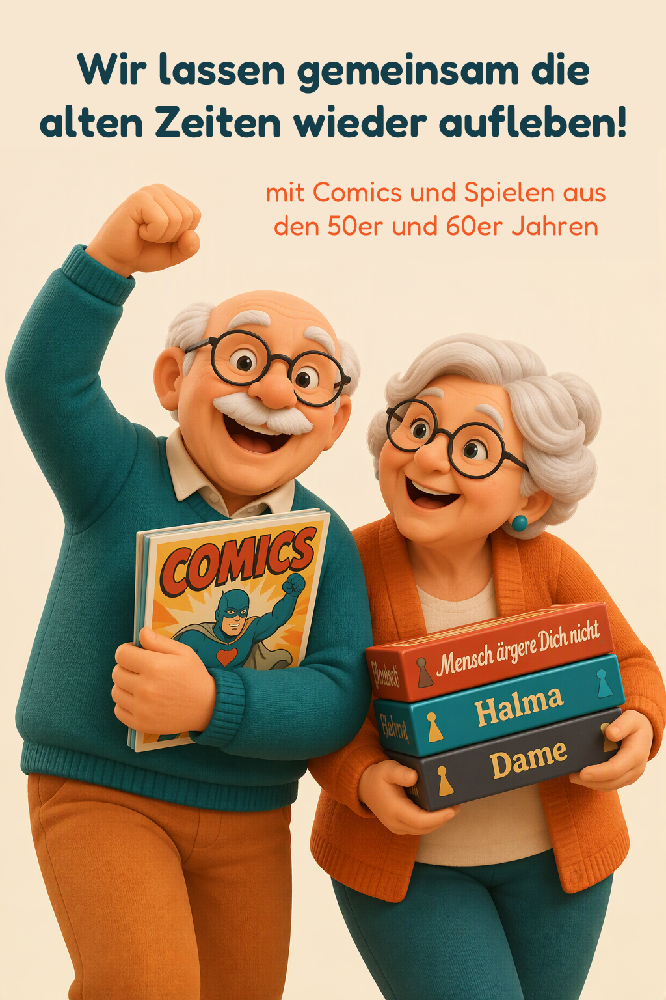
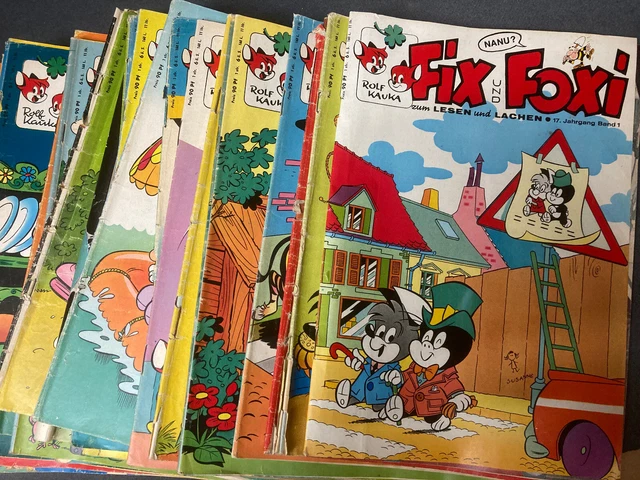
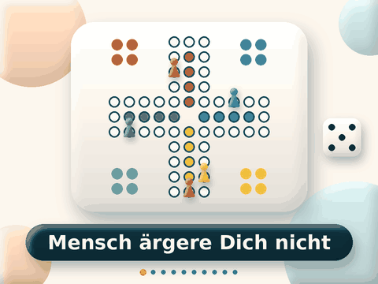

Abenteuer Nostalgie Die Comic- und Spielemesse für Rentner und Senioren
Erinnern Sie sich an Fix und Foxi, die Digedags und die erste Runde „Mensch ärgere Dich nicht“ am Küchentisch? Einen ganzen Sonntag lang holen wir die Klassiker der 1950er- und 1960er-Jahre zurück – zum Blättern, Spielen und Erzählen.
- bis
- Messehallen Hamburg, Messeplatz 1, 20357 Hamburg

Was erwartet Sie?
Auf über 3.000 Quadratmetern dreht sich alles um die Hefte und Spiele Ihrer Kindheit.
- Tausende Comichefte zum Anschauen und Tauschen: Fix und Foxi, Mosaik mit den Digedags, Sigurd, Akim, Petzi, Lurchi und frühe Micky-Maus-Hefte
- Spieltische mit Mensch ärgere Dich nicht, Malefiz, Memory, Fang den Hut, Halma, Mühle und Mikado
- Kartenrunden mit Autoquartett, Schwarzer Peter und Elfer raus!
- Lesungen, ein Turnier, ein Zeichenkurs und ein großes Quiz – zum ganzen Programm
- Kaffee, Kuchen und mittags Erbsensuppe wie bei Muttern

Wann und wo?
-
Datum
-
Uhrzeit
von bis , Einlass ab 10 Uhr
-
Ort
Messehallen Hamburg, Messeplatz 1, 20357 Hamburg – so kommen Sie hin
-
Eintritt
12 Euro, ermäßigt 8 Euro, Enkel bis 14 Jahre frei – zu den Tickets
Für wen ist die Messe?
Für alle, die mit Heften vom Kiosk und Spielen aus dem Schrank groß geworden sind.
- Rentner und Senioren, die gern in Erinnerungen schwelgen
- Sammler, die ein fehlendes Heft suchen oder doppelte tauschen möchten
- Großeltern, die ihren Enkeln zeigen wollen, wie man früher gespielt hat
- Seniorengruppen, Spieletreffs und Nachbarschaftsvereine
Alle Wege sind stufenlos, überall stehen Stühle, und unser Team hilft gern. Mehr dazu in den häufigen Fragen.
Warum Sie unbedingt kommen sollten
-
Erinnerungen zum Anfassen
Halten Sie das Heft wieder in der Hand, für das Sie früher Ihr ganzes Taschengeld gespart haben.
-
Spielen wie früher
Über 80 Spieltische warten auf Sie. Mitspieler finden Sie garantiert – zur Not sind wir das.
-
Nette Leute treffen
Wer „Elfer raus!“ kennt, hat sofort Gesprächsstoff. Hier entstehen Freundschaften am Spieltisch.
-
Schätze tauschen
Bei der Comic-Tauschbörse finden Sie vielleicht endlich das Mosaik-Heft, das Ihnen seit 1962 fehlt.
-
Ohne Stress und Gedränge
Breite Gänge, viele Sitzplätze, ruhige Ecken und eine Garderobe, die nichts kostet.
-
Die Enkel staunen lassen
Enkelkinder bis 14 Jahre kommen gratis mit. Zeigen Sie ihnen, wie viel Spaß Spielen ohne Bildschirm macht.
Die Klassiker drehen eine Runde

Mensch ärgere Dich nicht, Malefiz, Memory, Fang den Hut, Halma, Mühle, Mikado – welches war Ihr Lieblingsspiel?
Wer möchte, kann es auf der Messe gleich wieder ausprobieren. Spielregeln erklären wir gern noch einmal.
Zum Programm